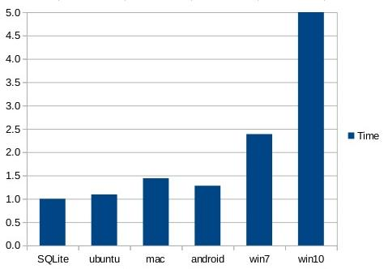
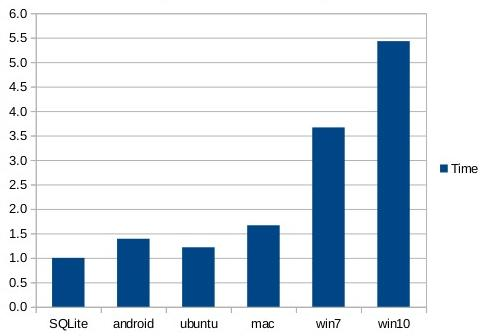
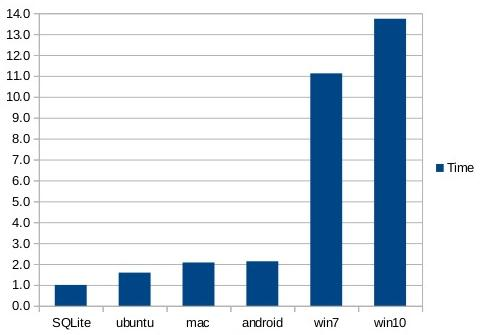
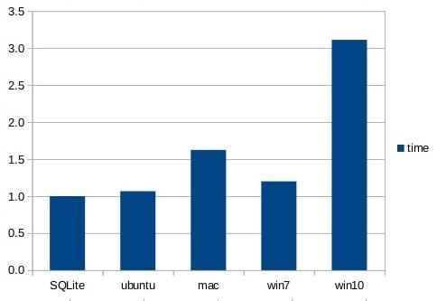
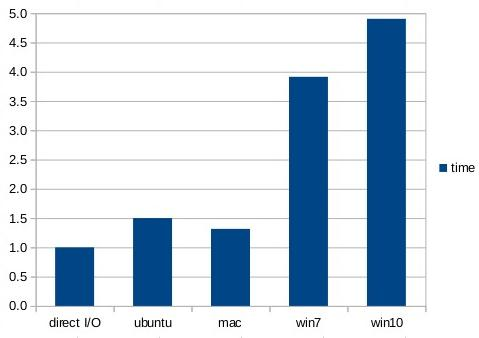

由WaterRun使用gpt-5.1-codex-mini翻译
小巧。快速。可靠。
任选其三。
任选其三。
与通过 fread() 或 fwrite() 从磁盘上的单独文件读取或写入相同的 Blob 相比，SQLite 读取和写入小 Blob（例如缩略图）快约 35%¹。
此外，单个 SQLite 数据库中存放 10KB Blob 所占用的磁盘空间比将这些 Blob 存放在单独文件中少约 20%。
我们认为性能差异的原因在于，当使用 SQLite 数据库时，只需要调用一次 open() 与 close() 系统调用；而使用存放于单独文件中的 Blob 时，每个 Blob 都要调用一次 open() 与 close()。调用 open() 与 close() 的开销显然大于使用数据库的开销。空间占用减少的原因在于，单独文件会扩展至文件系统块大小的整数倍，而 Blob 则能更紧密地打包在 SQLite 数据库中。
本文中的测量是在 2017-06-05 这一周完成，使用的 SQLite 版本介于 3.19.2 与 3.20.0 之间。您可以期待未来版本的 SQLite 表现更佳。
¹上面提到的 35% 是一个近似值，实际时间取决于硬件、操作系统、实验细节以及实际硬件上的随机性能波动。更多细节请参见下文。建议您自行尝试这些实验，并在SQLite 论坛报告显著偏差。
35% 的结论是基于作者手边每台机器上运行的测试。一些审稿人报告在其系统上 SQLite 的延迟高于直接 I/O，我们尚不完全理解这种差异。我们还观察到，在使用冷文件系统缓存运行实验时，SQLite 的表现可能不如直接 I/O。
因此，请记住这一点：SQLite 的读/写延迟与磁盘上单独文件的读/写延迟具有竞争力。SQLite 通常更快，有时几乎一样快。无论如何，本文推翻了“关系数据库一定比直接文件系统 I/O 慢”的常见假设。
一项2022 年研究（GitHub 上的备用链接）发现，在现实工作负载上，SQLite 比 Linux 上的 Btrfs 和 Ext4 快大约两倍。
Jim Gray等人研究了 Microsoft SQL Server 中 BLOB 与文件 I/O 的读取性能，发现当 BLOB 大小小于约 250KiB 到 1MiB 时，从数据库中读取 BLOB 更快。（论文）。在该研究中，即使内容存储在单独文件中，数据库仍然会保存该内容对应的文件名，因此每次读取 BLOB 时都要访问数据库以检索文件名。本文中，BLOB 的关键就是文件名，因此无需预先访问数据库。由于本文在从单独文件读取内容时完全不使用数据库，直接文件 I/O 开始领先的阈值比 Gray 论文中的要小。
本站上的内部与外部 BLOB一文使用与 Jim Gray 论文相同的方法——将 Blob 文件名存储为数据库条目——但讨论的是 SQLite 而非 SQL Server，该文撰写于 2011 年左右。
I/O 性能通过 SQLite 源树中的 kvtest.c 程序测量。要编译该测试程序，请先将 kvtest.c 源文件与 SQLite 混合源文件 “sqlite3.c” 和 “sqlite3.h” 放在同一目录下，然后在类 Unix 系统上运行如下命令：
gcc -Os -I. -DSQLITE_DIRECT_OVERFLOW_READ \ kvtest.c sqlite3.c -o kvtest -ldl -lpthread
在 Windows 上使用 MSVC 时：
cl -I. -DSQLITE_DIRECT_OVERFLOW_READ kvtest.c sqlite3.c
关于 Android 上的编译说明请在下文查看。
使用生成的 “kvtest” 程序创建一个包含 100,000 个随机不可压缩 Blob 的测试数据库，每个 Blob 大小在 8,000 到 12,000 字节之间，可以使用如下命令：
./kvtest init test1.db --count 100k --size 10k --variance 2k
如果需要，可以用以下命令验证新数据库：
./kvtest stat test1.db
接下来，使用如下命令将所有 Blob 复制到一个目录中的单独文件：
./kvtest export test1.db test1.dir
此时可以测量 test1.db 数据库使用的磁盘空间以及 test1.dir 目录及其内容所用的空间。在标准的 Ubuntu Linux 桌面上，数据库大小为 1,024,512,000 字节，而 test1.dir 目录根据 “du -k” 显示占用 1,228,800,000 字节，约比数据库多 20%。
上述创建的 “test1.dir” 目录将所有 Blob 放在一个文件夹中。据推测某些操作系统在单目录包含 100,000 个对象时性能会下降。为验证这一点，kvtest 程序还可以将 Blob 存放在每个文件夹最多包含 100 个文件和/或子目录的层次结构中。可以通过 “export” 命令添加 --tree 选项来创建这种替代的磁盘表示：
./kvtest export test1.db test1.tree --tree
test1.dir 目录将包含 100,000 个文件，文件名如 “000000”、“000001”、“000002” 等，而 test1.tree 会在子目录中包含相同的文件，例如 “00/00/00”、“00/00/01” 等。尽管 test1.tree 因为额外的目录项略大于 test1.dir，两者占用的空间大致相同。
接下来的所有实验无论使用 “test1.dir” 还是 “test1.tree” 都表现一致。在任何操作系统上两者的性能差异都非常小。
请使用以下命令测量从数据库与单独文件读取 Blob 的性能：
./kvtest run test1.db --count 100k --blob-api ./kvtest run test1.dir --count 100k --blob-api ./kvtest run test1.tree --count 100k --blob-api
视具体硬件和操作系统而定，您将看到从 test1.db 数据库读取比从 test1.dir 或 test1.tree 目录读取快约 35%。由于缓存原因，结果可能在多次运行之间显著波动，因此建议根据需求多次运行测试并取平均值、最差值或最好值。
在数据库读取测试中使用 --blob-api 选项会让 kvtest 使用 SQLite 的sqlite3_blob_read() 接口来加载 Blob 内容，而不是运行纯 SQL 语句。这能让 SQLite 在读取测试中运行得更快些。您也可以省略该选项，比较使用 SQL 语句时的性能。即便如此，SQLite 仍然优于直接读取，只是优势不如使用 sqlite3_blob_read() 时明显。对于从单独磁盘文件读取的测试，该选项会被忽略。
通过添加 --update 选项可以测量写入性能。此选项会将 Blob 就地覆盖为另一个大小完全相同的随机 Blob。
./kvtest run test1.db --count 100k --update ./kvtest run test1.dir --count 100k --update ./kvtest run test1.tree --count 100k --update
上述写入测试并不完全公平，因为 SQLite 执行的是电源安全事务，而直接写入磁盘则没有。为了让测试更公平一些，可以给 SQLite 写入添加 --nosync 选项以禁用调用 fsync() 或 FlushFileBuffers() 将内容刷新到磁盘，或者给直接写入测试添加 --fsync 选项以强制其在更新磁盘文件时调用 fsync() 或 FlushFileBuffers()。
默认情况下，kvtest 在单个事务内完成所有数据库 I/O 测量。使用 --multitrans 选项可以让每个 Blob 的读写分别在单独事务中执行。--multitrans 会让 SQLite 变得非常慢，并在性能上不再与直接磁盘 I/O 竞争。该选项再次证明：为了让 SQLite 表现最优，应尽可能在一个事务中完成更多数据库交互。
还有许多其他测试选项，可以通过运行以下命令查看：
./kvtest help
下面的图表展示了在五种不同系统上使用 kvtest.c 收集的数据：
除 Win7 使用机械硬盘外，其余机器均为 SSD。测试数据库包含 100K 个 Blob，大小在 8K 至 12K 之间均匀分布，总计约 1GB 内容。数据库页面大小为 4KiB。所有测试都编译时启用了 -DSQLITE_DIRECT_OVERFLOW_READ。测试多次运行，第一次运行用于热身缓存，其时间被舍弃。
下图展示了从文件系统直接读取 Blob 所需时间与从 SQLite 数据库读取相同 Blob 所需时间的平均值。实际时间因系统而异（例如 Ubuntu 桌面比 Galaxy S3 电话快得多）。图中显示的是从文件读取所需时间与从数据库读取所需时间的比值。图表最左侧的柱表示归一化后从数据库读取的时间，供参考。
在此图中，一条 SQL 语句（“SELECT v FROM kv WHERE k=?1”）被预编译一次。然后对于每个 Blob，将其关键值绑定到 ?1 参数，并执行语句以提取 Blob 内容。
图表显示，在 Windows10 上，可以从 SQLite 数据库读取内容的速度约为直接从磁盘读取的 5 倍。在 Android 上，SQLite 比直接从磁盘读取仅快约 35%。

通过绕过 SQL 层，直接使用 sqlite3_blob_read() 接口读取 Blob 内容，可以略微提升性能，如下一个图表所示：

还可以通过使用 SQLite 的内存映射 I/O功能进一步提升性能。在下一个图中，整个 1GB 数据库文件被映射进内存，Blob 按随机顺序通过 sqlite3_blob_read() 接口读取。启用这些优化后，SQLite 在 Android 或 macOS 上的读取速度是直接读取的两倍，在 Windows 上则超过 10 倍。

第三张图表表明，在 Mac 和 Android 上从 SQLite 读取 Blob 内容的速度是从磁盘单独文件读取的两倍，在 Windows 上甚至快了惊人的十倍。
写入更慢。无论是直接 I/O 还是 SQLite，写入性能普遍比读取慢 5 到 15 倍。
写入性能测量通过将整个 Blob 替换（覆盖）为另一个不同的 Blob 实现。所有实验中的 Blob 均为随机且不可压缩。由于写入远慢于读取，因此只替换数据库中 100,000 个 Blob 里的 10,000 个。被替换的 Blob 是随机挑选的，顺序也无特定规律。
直接写入磁盘通过 fopen()/fwrite()/fclose() 实现。默认情况下（如下所示所有结果），操作系统文件系统缓冲不会使用 fsync() 或 FlushFileBuffers() 强制刷新到持久存储。换言之，直接写入不会尝试实现事务性或电源安全。我们发现，在每个写入的文件上调用 fsync() 或 FlushFileBuffers() 会让直接写入磁盘的速度比 SQLite 慢约 10 倍或更多。
下个图表将 SQLite 在WAL 模式下的数据库更新与直接覆盖磁盘上单独文件的性能进行对比。PRAGMA synchronous 设置为 NORMAL。所有数据库写入均在单个事务内完成。数据库写入计时在事务提交后停止，但在执行检查点之前。请注意，SQLite 写入与直接写入不同，是事务性且电源安全的，尽管由于 synchronous 设置为 NORMAL 而非 FULL，这些事务并不具备耐久性。

Android 写入实验的数据未列出，因为 Galaxy S3 上的性能测试波动极大。完全相同的实验连续两次运行会得到截然不同的时间。公平地说，Android 上的 SQLite 性能略低于直接写入磁盘。
下图显示在禁用了事务（PRAGMA journal_mode=OFF）且PRAGMA synchronous 设置为 OFF 的情况下，SQLite 与直接写入之间的性能对比。这些设置让 SQLite 与直接写入在同一起跑线上，也就是说，它们使得数据更容易因系统崩溃或断电而损坏。

在所有写入测试中，在运行直接写入性能测试之前务必关闭杀毒软件。我们发现杀毒软件会让直接写入变慢一个数量级，而对 SQLite 写入影响甚微。原因可能是直接写入会更改成千上万的文件，每个文件都需要杀毒扫描，而 SQLite 只更改单个数据库文件。
-DSQLITE_DIRECT_OVERFLOW_READ 编译时选项会在读取溢出页面内容时绕过页面缓存。这能让 10KB BLOB 的数据库读取速度略微提升，但并不是非常显著。即便不使用 SQLITE_DIRECT_OVERFLOW_READ，SQLite 仍然在速度上优于直接文件系统读取。
其他编译选项，例如使用 -O3 代替 -Os，或启用 -DSQLITE_THREADSAFE=0 以及其他一些推荐的编译选项，也可能让 SQLite 相对于直接文件系统读取跑得更快。
测试数据中 Blob 的大小会影响性能。对于较大的 Blob，文件系统通常更快，因为 open() 与 close() 的开销可以被更多的 I/O 字节分摊；而随着平均 Blob 大小减小，数据库在速度和空间上都更高效。
SQLite 在读取和写入方面都与磁盘上的单独文件相比具有竞争力，通常更快。
当 Windows 上启用杀毒软件时，SQLite 比直接写入磁盘快得多。由于杀毒软件在 Windows 中默认启用且应当保持启用，这意味着在 Windows 上 SQLite 通常也比直接写入磁盘快得多。
对于所有系统、无论 SQLite 还是直接写入，读取大概比写入快一个数量级。
I/O 性能取决于操作系统和硬件，差异很大。请在得出结论前自己做测量。
一些其他 SQL 数据库引擎建议将 Blob 存放在单独文件中，然后在数据库中存储文件名。在那种情况下（需要先查询数据库获取文件名再打开文件），直接将整个 Blob 存储在数据库中能让 SQLite 的读写性能更快。更多信息请参见内部与外部 BLOB一文。
kvtest 程序在 Android 上的编译与运行如下。首先安装 Android SDK 与 NDK。然后准备一个名为 “android-gcc” 的脚本，大致内容如下：
#!/bin/sh # NDK=/home/drh/Android/Sdk/ndk-bundle SYSROOT=$NDK/platforms/android-16/arch-arm ABIN=$NDK/toolchains/arm-linux-androideabi-4.9/prebuilt/linux-x86_64/bin GCC=$ABIN/arm-linux-androideabi-gcc $GCC --sysroot=$SYSROOT -fPIC -pie $*
使该脚本可执行并将其放在 $PATH 中。然后按如下方式编译 kvtest 程序：
android-gcc -Os -I. kvtest.c sqlite3.c -o kvtest-android
接着，将生成的 kvtest-android 可执行文件推送到 Android 设备：
adb push kvtest-android /data/local/tmp
最后，使用 “adb shell” 在设备上获取 shell 提示符，cd 到 /data/local/tmp 目录，然后像在其他类 Unix 主机上一样开始运行测试。
本页最后更新于 2025-11-13 07:12:58Z